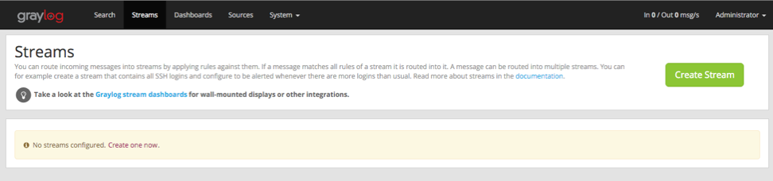
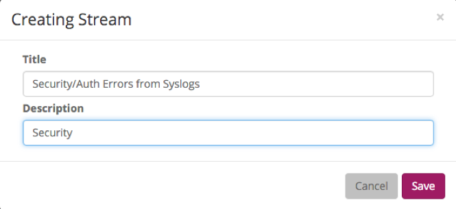
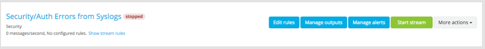
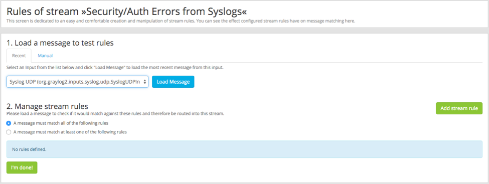
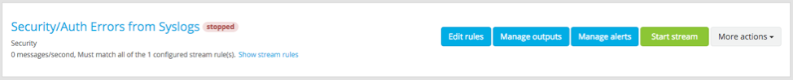
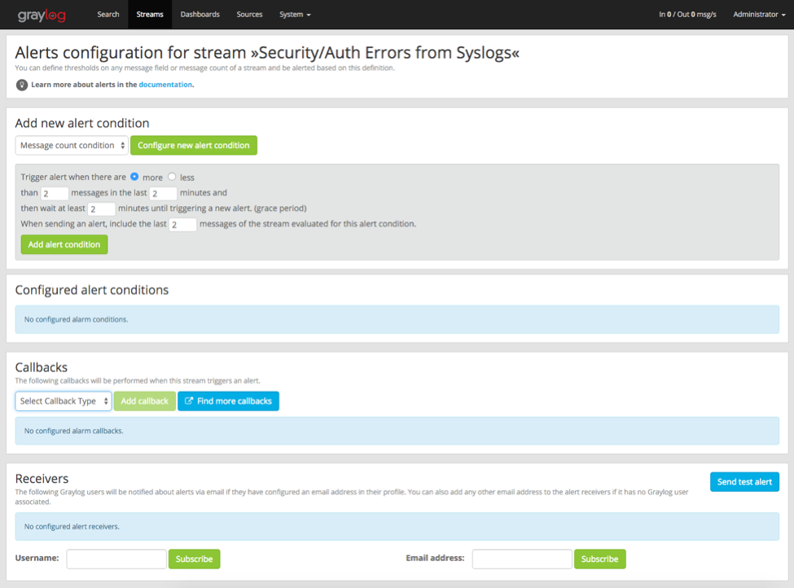
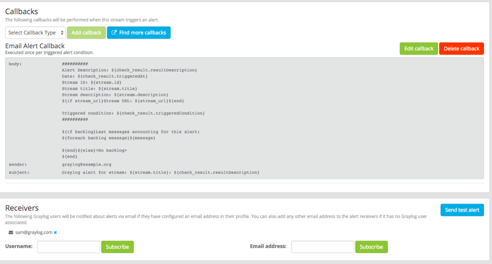

Alerts (Triggers & Notifications)¶
Let’s configure some proactive alerts to let us know when something needs our attention.
Create a Stream¶
In order to set up an alert, we need to create a stream first. Streams process incoming messages real time based on simple and/or conditions. Click Streams.
Let’s create a stream for all incoming security/authentication error messages. Click Create Stream.
Type in a Title and Description.
Create a Stream Rule¶
Next, we are going to configure the stream to process Syslog UDP input messages for any security alerts.
Hit the Edit rules button.
Pick the Syslog UDP Input, and click Add stream rule.
Then, type in the values shown below and hit save.
Then click I’m done!
We have just configured this stream to process in real time all the messages that are from the security/authorization facility.
Create the Alert¶
You can now either output your new stream to a 3rd party application or database, and/or trigger an alert to notify you in real time when a message that matches a stream.
Let’s create an alert that will email us when there are more than 2 messages in the last 2 minutes . Click Manage Alerts.
In the Add new alert condition section, let’s configure and add a new alert. Select message count condition, and configure the rest based on my screenshot (input 2’s in every field). Then click Add alert condition.
Send a Test Email¶
In the Callbacks section, select email alert callback, and input your email address in the Receivers section. After you’ve added a callback type and receiver, hit the blue ‘Send test alert’ button.
Going Further¶
If you want to configure an SMTP server, you can refer to the this documentation.
If you want to make this stream active, just go back to Streams and where you see the stream name, click the green Start stream button.

Tomorrow you can configure all your own logs and alerts. To help, go and get some deep knowledge in the official documentation.